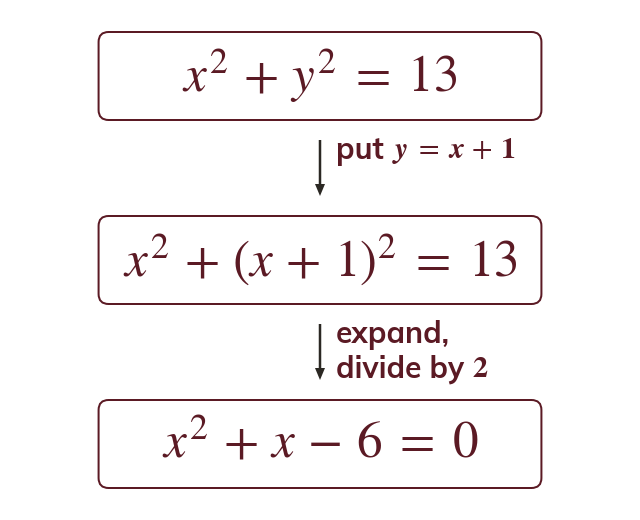
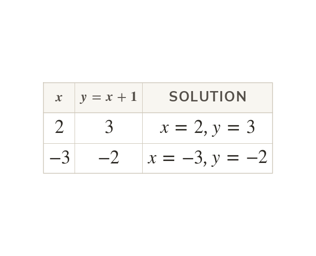
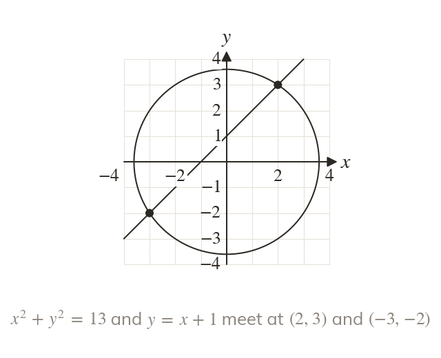
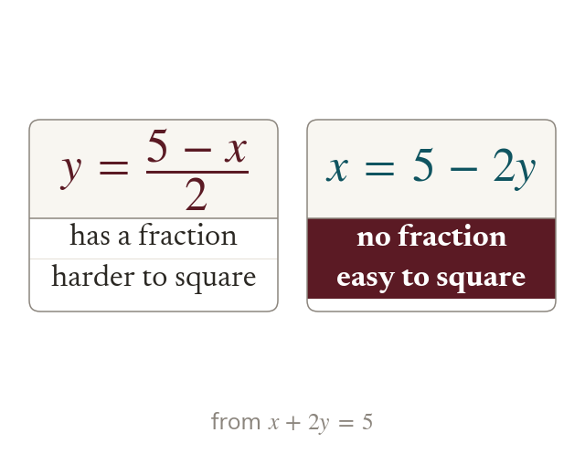
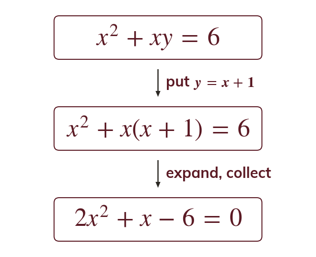
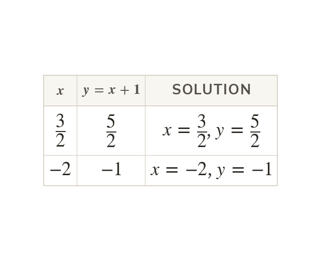

Substitute the linear one
Make x or y the subject of the linear equation. Substituting it into the quadratic leaves a quadratic in one letter.
When one equation is a quadratic, substitution turns the pair into a single quadratic, which can have two solutions. Next lesson these solutions become the points where a line meets a curve.
Work down the page at your own pace. Write every answer in your book first, then click to check it.
Read each card, then follow the worked examples one step at a time.

Make x or y the subject of the linear equation. Substituting it into the quadratic leaves a quadratic in one letter.

The quadratic usually gives two values of Putting each one into the linear equation gives its partner

A line can meet a circle or a curve twice. Each pair (x, y) is one of those points.
Pick an answer. If it's wrong, the feedback tells you which mistake it was.
Write the blanks in your book first, then tap each one to check.
Read each card, then follow the worked examples one step at a time.

Make the subject the letter that keeps the working simplest. From , avoids fractions.

Substitute the expression for every including in an xy or term. Then expand and collect into a quadratic.

Put each x into the linear equation, not the quadratic. A term would give extra values of that are not solutions.
Pick an answer. If it's wrong, the feedback tells you which mistake it was.
Write the blanks in your book first, then tap each one to check.
Finished? Next lesson: 3.3 Simultaneous Equations on Graphs.
For each skill, tap the one that is true for you today. Your Revise pages start with anything you mark Not yet.
Your ratings are saved on this device only.
Log in, then search for a code to practise that skill.